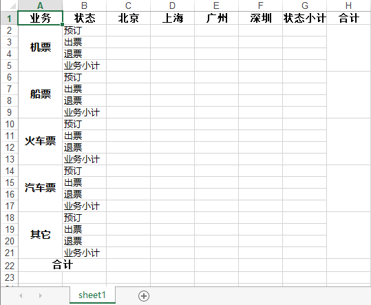
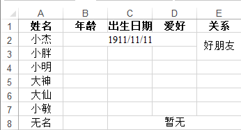

Python自动化Wrod和Excel入门培训
阅读文档之前你应该
- 在window环境下
- 熟悉Python
- 了解Word和Excel
- 结合./doc和./src文件下的测试文档和源文件进行学习使用
培训完以后你应该具备
- 能够使用Python对Work进行段落、图片、表格插入，以及简单的样式应用
- 能够使用Python对Excel进行简单的数据导入导出,获取合并单元格的值
- 能够在数据库、Excel和Word之间相互导入导出数据
Python自动化之Word
安装(python-docx)
1 | pip install python-docx |
快速入门(auto_Word)
打开一份文档
1 | from docx import Document |
添加标题
标题一共分为9级(1~9)
1 | # 默认一级标题 |
段落
段落的添加:
1 | # 添加到最后 |
段落样式的应用:
可通过add_run()方法来实现段落的拆分,字体样式应用(比如:粗体和斜体)
1 | # 段落样式 |
分页
1 | # 分页 |
插入图片
1 | document.add_picture('../img/协同.png', width=Inches(2)) |
表格
表格的创建:
1 | # 表格 |
一个模拟从数据库导入数据到word表格里的实例:
1 | document.add_paragraph('表') |
了解更多(auto_word)
如果你对python自动化word很感兴趣,想进一步提升请猛击这里
Python自动化之Excel
安装(xlrd、xlwt)
1 | # xlrd 涌入内容读取, xlwr 用于内容写入 |
快速入门(auto_Excel)
xlrd使用
获取Excel文件
1 | workbook = xlrd.open_workbook('excel_file_path') |
获取工作表名称
1 | # 获取所有工作表名称 |
获取工作表(三种方式)
1 | sheet_1 = workbook.sheets()[0] #通过索引顺序获取 |
常用的sheet对象的属性和方法
1 | # 获取sheet名称 |
获取单元内容为日期类型的方式
1 | date_value = xlrd.xldate_as_tuple(sheet_2.cell_value(1,2),workbook.datemode) |
(扩展)获取合并单元格的内容
1 | # 只获取合并单元格的内容 |
xlwt使用
sheet的创建
1 | # 创建工作簿 |
内容的写入
1 | # x,y 表行索引, y,h 表列索引 , string表要输入的字符串, style表字符串样式,如果只有两个参数x,y则表示第x+1行第y+1列 |
单元格的合并
1 | # 和xlrd不一样的地方是,x,y,h,w顾头又顾尾!!! |
牛刀小试
案例来自这里,例子非常棒,但是由于时间有点早,本人大胆进行了加工改良
请生成如下图格式的Excel文件:

源码:
1 | # 设置字体的样式 |
再次牛刀小试
请生成如下图格式的Excel文件:

源码:
1 | # 生成exce文件 |
了解更多(auto_excel)
如果你对python自动化Excel很感兴趣,想进一步提升请猛击这里